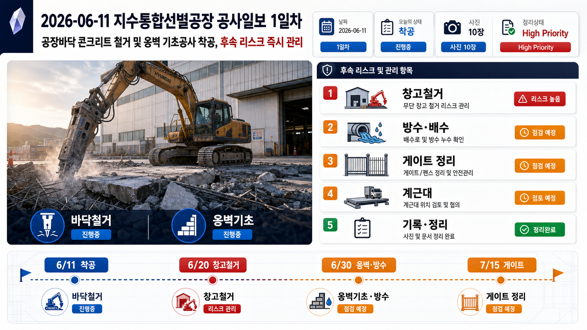
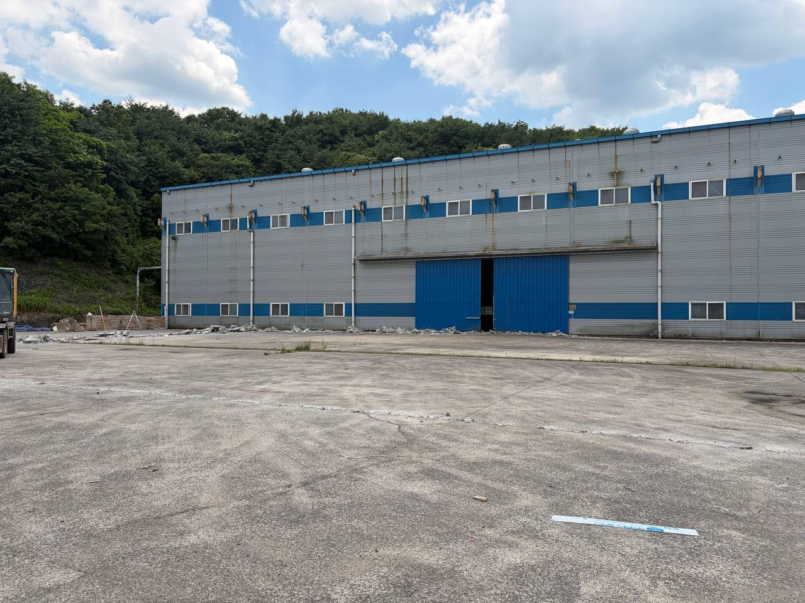
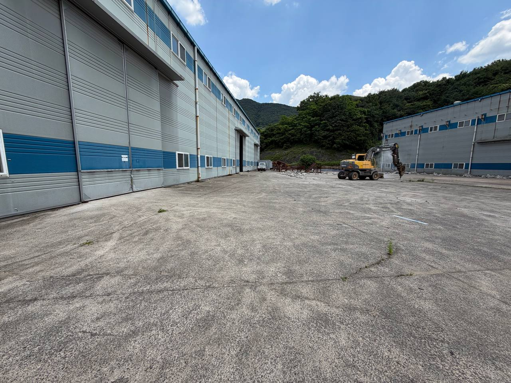

착공·선행
- 철거: 파쇄·적치
- 옹벽: 기준선·6/30 목표
Construction Daily · High Priority Review
금일은 공장바닥 콘크리트 철거 및 옹벽 기초공사 착공이 현장에서 확인된 날입니다. 동시에 무허가 창고 철거, 옥상 침수 방지와 방수공사, 정문게이트·펜스 정리, 계근대 설치 후보지 검토까지 후속 공사 리스크를 정리했습니다.

원문 메타데이터와 Dataview 내용을 독립 실행 HTML용 요약 대시보드로 재구성했습니다.
| 항목 | 값 | 검토 의미 |
|---|---|---|
| 프로젝트 | 지수통합선별공장 | 증축 및 부대공사 흐름의 착공 기록 |
| 문서 분류 | 공사일보/착공기록 | 착공 증빙 및 후속 일정 관리 기준 |
| 추출 방식 | vision + user commentary | 사진 판독과 현장 지시사항을 결합 |
| 신뢰도 | medium-high | 수량·치수·정확 위치는 도면 및 시공사 확인 필요 |
검토자가 바로 판단할 수 있도록 공종, 상태, 후속관리 항목으로 압축했습니다.
| 구분 | 내용 | 상태 | 후속관리 |
|---|---|---|---|
| 착공/철거 | 브레이커로 기존 바닥 콘크리트 파쇄 | 진행 | 철거 범위·잔재 반출량 기록 |
| 옹벽 기초 | 옹벽 기초공사 착공 전 바닥 철거 | 착수 | 기준선·레벨·배수 간섭 확인 |
| 준공 리스크 | 건축물대장에 없는 외곽 무허가 창고 철거 지시 | 중요 | 철거 전후 사진·폐기물 처리기록 보관 |
| 방수/배수 | 기숙사·사무동 물홈통 막힘 및 옥상 침수 방지 | 지시 | 장마 전 물홈통 청소·방수 범위 확정 |
| 게이트/펜스 | 기존 펜스 주변 풀·덩굴·나무 제거 | 검토 | 게이트·펜스 시공 일정 확인 |
| 계근대 | 설치 후보지 및 대형차 동선 검토 | 검토 | 설치업체 현장 미팅 의뢰 |
Mermaid 다이어그램을 외부 라이브러리 없이 읽을 수 있는 흐름 카드로 변환했습니다.
역할별 책임과 증빙 보관 포인트를 분리했습니다.
Gantt 내용을 검토용 타임라인으로 단순화했습니다.
각 사진의 위치, 작업 확인, 관리포인트, 분류를 검토 단위로 정리했습니다.







브라우저 안에서만 체크 상태가 유지되는 로컬 검토용 체크리스트입니다.
검토 의견을 빠르게 다시 전달할 수 있도록 복사용 프롬프트를 제공합니다.
사용자 현장 설명 및 지시사항 원문 요약입니다.
사용자 현장 설명 및 지시사항 원문 요약: - 이번주 일정에 공사착공이 있고, 오늘 현장을 방문함. - 오늘 공장바닥 콘크리트 철거 및 옹벽 기초공사 착공 모습. - 브레이커로 바닥 콘크리트를 제거 중. - 건축물대장에 없는 부지 외곽 무허가 창고 철거 지시. - 목적: 추후 준공검사 시 리스크 제거. - 기숙사 및 사무동 외곽 물홈통 막힘에 따른 건물옥상 침수 방지 및 방수공사 지시. - 정문게이트 및 펜스공사 전 기존 펜스구간 풀·나무·덩굴 제거와 시공일정 확인 필요. - 계근대 설치 후보 위치 확인 및 설치업체 미팅 의뢰 필요.
인쇄본에서는 인터랙션 버튼이 제외됩니다.